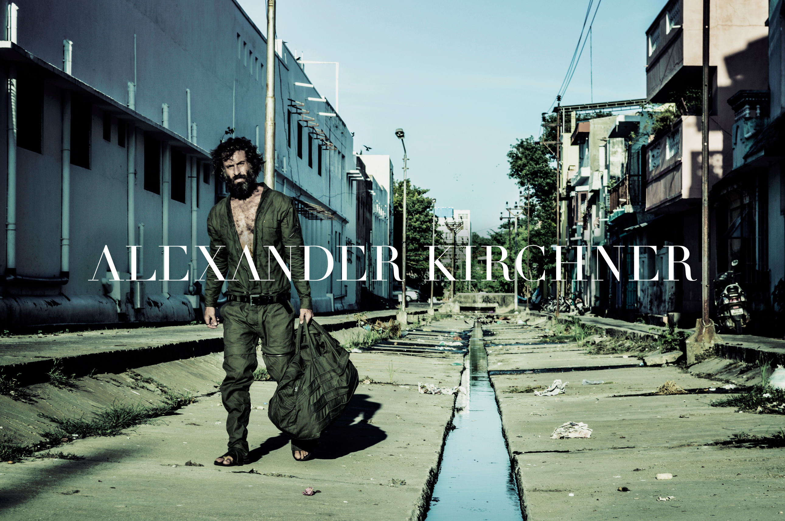

Menu
stuff
to do
test
This is Collaborations slide
This is Projects slide
This is Shop slide
Alexander Kirchner has been working as a freelance designer, stylist and producer - including sewing and knitting his own designs for a number of years. Alexander has collaborated with other designers, the music industry, and artists of all genres, in designing, producing and styling one of a kind, elite projects for individual customers and high-end production companies. From creating unique wedding dresses to authentic costumes for music videos, Alexander Kirchner has had his hand in almost every aspect of fashion - and he now looks to extend his scope as a head designer of his own brand; ALEXANDER KIRCHNER